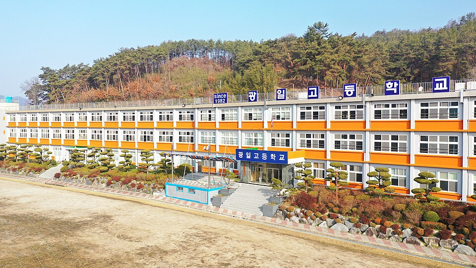
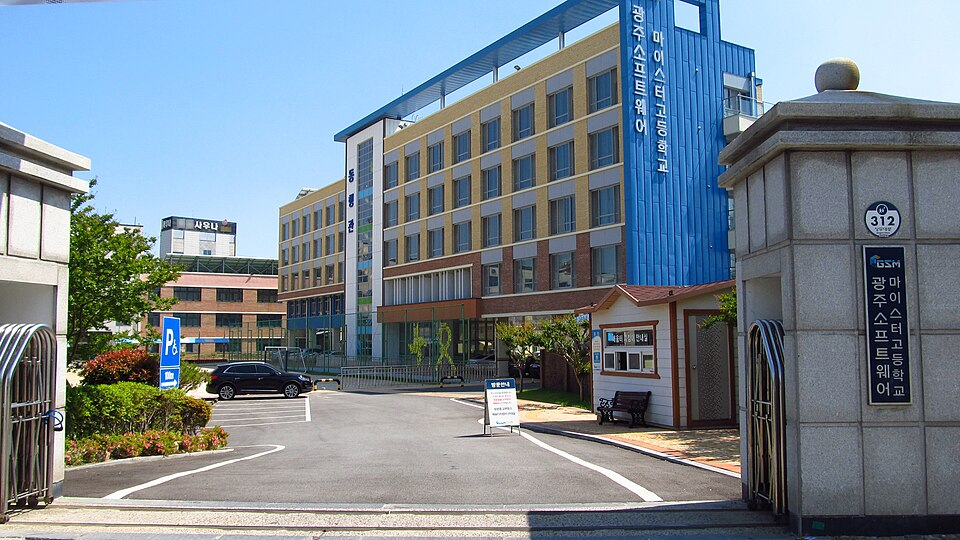

광주 광산구는 관리 중인 학교가 93곳으로 광주에서도 학교가 많은 자치구입니다. 고등학교가 19곳, 중학교가 28곳이고, 수완고·장덕고·운남고부터 첨단고·광일고까지 구 안에 흩어져 있습니다. 같은 구라도 학교마다 진도와 프린트가 달라서, 학원 반 진도와 맞지 않는 학생은 집으로 오는 1:1 영어과외나 수학 수업을 따로 찾게 됩니다.
오늘은 광산구로 직접 찾아가는 선생님 중 두 분을 소개합니다. 한 분은 영어를 전담하는 선생님, 한 분은 중·고등 수학을 보는 선생님입니다. 두 분 모두 수완동·신창동·신가동·운남동 쪽을 다니고, 수학 선생님은 북구 첨단 쪽까지 방문합니다.
수완동·신창동 쪽에서 중등·고등 영어과외를 방문으로 받고 싶을 때 맞는 선생님입니다. 초중고 영어 강의를 6년 해 왔고, 중상위권 학생을 주로 맡아 내신과 수능 대비를 함께 봅니다. 수업은 가르치는 시간이 대부분이고, 나머지는 공부 방법을 점검하는 코칭으로 채웁니다.
혼내기보다 칭찬과 격려로 동기를 끌어내는 수업을 지향합니다. 플래너로 공부 습관을 관리하고, 수행평가와 모의고사 일정도 함께 챙깁니다. 매 수업 뒤에는 수업 내용과 학생 상황을 정리해 학부모님께 전달합니다. 방문 수업만 가능하다는 점은 확인해 주세요.
안ㅇ호 선생님 상세 프로필 →장덕동·수완동이나 북구 첨단 쪽에서 고1 수학과외부터 고3 미적분까지 한 선생님에게 이어 가고 싶을 때 맞는 선생님입니다. 2022 개정 교육과정의 공통수학1·2, 대수, 미적분Ⅰ·Ⅱ를 수업하고, 중학생은 중2부터 맡습니다. 기하는 수업하지 않으니 선택 과목을 미리 확인해 주세요.
수학이 어려운 학생에게는 공부법부터 잡아 주고, 중위권 학생은 상위권으로 올라가는 데 필요한 관리를 합니다. 통합사회와 중등 과학도 수업할 수 있어, 수학 외 과목이 함께 필요한 학생에게 선택지가 넓습니다. 방문과 화상이 모두 가능합니다.
김ㅇ서 선생님 상세 프로필 →
학교마다 진도와 시험 범위가 달라서, 학교별로 준비법을 따로 정리해 두었습니다.
👉 광주 광산구 영어과외 선생님 · 광주 광산구 수학과외 선생님 · 관리 학교 93곳 전체 보기